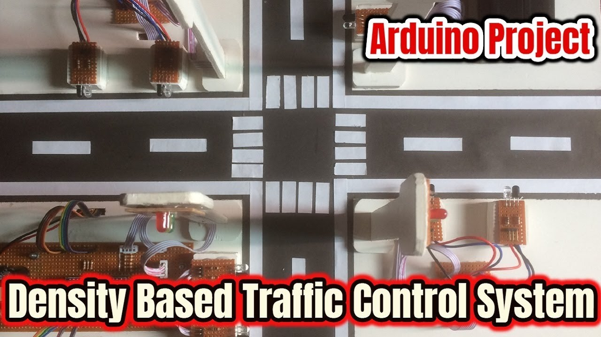

DENSITY BASED TRAFFIC CONTROL SYSTEM USING IR SENSORS

Introduction
The project is about creating a system that automatically detects the high traffic density on any of the roads using Infrared sensors as they get activated and receive the signal as the vehicles and motorcycles pass close to them placed on each road and releases those with a high density hence controlling traffic congestion during the rush hours for the busy people travelling to their destinations.Methodology
Our proposed system is going to be able to use the current fixed time delays during normal traffic flow to release vehicles and in case of high traffic density on any of the roads, the proposed system will then use IR sensors to determine high traffic density on any of the roads to release the vehicles. In case traffic density is equal on all the roads, vehicles and motorcycles will be released according to priority. The project is intended to develop a density based traffic control system using Infrared sensors placed along the roads to overcome traffic congestion. In Uganda today, our present methodology for traffic controlling on roads uses traffic officers and fixed time delays to release vehicles and motorcycles on junction roads across the country. Each side of the road has to wait for a fixed timing or even an instruction from a traffic officer and are allowed to cross for a limited fixed time. In the proposed system, we will use IR sensors to measure the traffic density to determine the release of vehicles and motor cycles too. However if there is normal traffic flow at the junction, there will be a fixed timing of quite some few seconds to release vehicles and motorcycles. We are to place two IR sensors on each road about 2 – 12cm apart. IR sensors get activated and receive the signal as the vehicles and motorcycles pass close to them; these sensors always detect the traffic on any given road and if there is high traffic density on a particular road, a green LED will glow to release those and the rest of the three roads will light red LEDs to stop in order to reduce on the traffic jam. If the traffic density on all roads is equal, vehicles and motorcycles will be released according to priority. All these sensors are interfaced to the microcontroller. Based on these sensors, the microcontroller detects the traffic and controls the traffic system by first releasing roads with high traffic densities hence overcoming delays and chaotic congestion on the road. The microcontroller to be used in this project is ARDUINO.
Aim and objectives
The aim of the project is to solve traffic congestion which is a severe problem in most junction roads (round about) in Uganda.
Objectives
The main objective of this project to control the traffic lights based on the density of theVehicles .In this system IR sensors are used to measure the density of the vehicles which areFixed at a distance apart. All the sensors are interfaced with the microcontroller which inturn controls the traffic signals system according to density detected by the sensors. The trafficDensity is high on particular side more priority is given for that side.
- Road users are going to be able to save considerable amount of time.
- Road users are going to be able to avoid unnecessary occurrence of traffic jams which causes public inconvenience.
- There will be no need of traffic officers at the junctions for supervising the traffic smoothly.
- The intelligent work which would have been done by the traffic officers will now be perfectly done by the micro controller in the circuit with the help of IR sensors and the program coded in the micro controller.
- During normal time, the signal timing changes automatically on seeing the traffic density at the junction but in case of any emergency vehicle like ambulances, fire brigade etc., requiring priority are built in in with RF control to override the set timing by providing instantaneous green signal in the desired direction while blocking the other lanes by red signal for some time. It reduces possibilities of traffic jams caused by traffic lights to an extent.
- To avoid displaying green LEDs on empty roads yet other roads with vehicles are put on hold.
- As the system takes care of few of the drawbacks of the existing system, there exists a scope for the work expansion. The proposed system can be extended in order to clear the traffic for the emergency vehicles like fire engines, ambulances, official government vehicles etc for those emergency vehicles even a second is also very valuable in cases where the traffic clearance plays a major role. By using the normal traffic system those vehicles also have to be following the normal signal times which is inappropriate. So the traffic should be cleared at each and every point so the emerging vehicles moves on without any problems. In this project in future , we can add module for sensing whose range is more than IR module (Ultrasonic sensors). We will modify our coding for controlling the traffic signal according to the density.
- We can use camera for security purpose.
- We can use GSM module to track location of the car.
- We can use image processing technique with the help of a camera.
Benefits
Future prospects for our proposed system.
Click the button below for the source code on github
Brief description of the two functionalities of our proposed system
Fixed time delays: for this on a junction, three red LEDs and only one green LED lights making way for vehicles on the green traffic light to move on while the others wait for a few minutes.
Fixed time delays
Sensor based sketch
Sensor based functionality: In this, two sensors are each placed on the four roads and incase any of the roads has a high traffic density, three LED lights will light and only one green LED releasing vehicles first. Incase traffic density is equal on all the four roads, vehicles will be released according to priority based on the number of vehicles each road has.